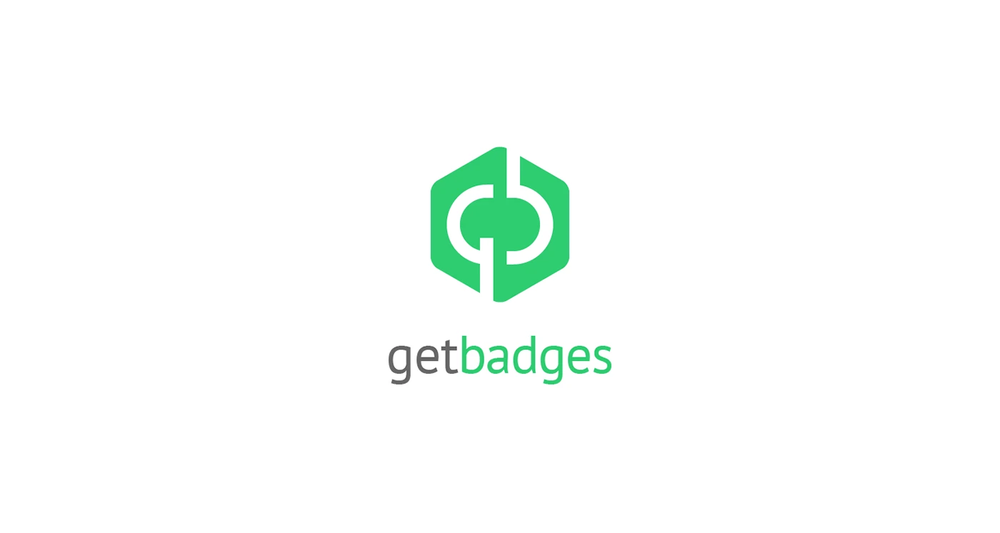
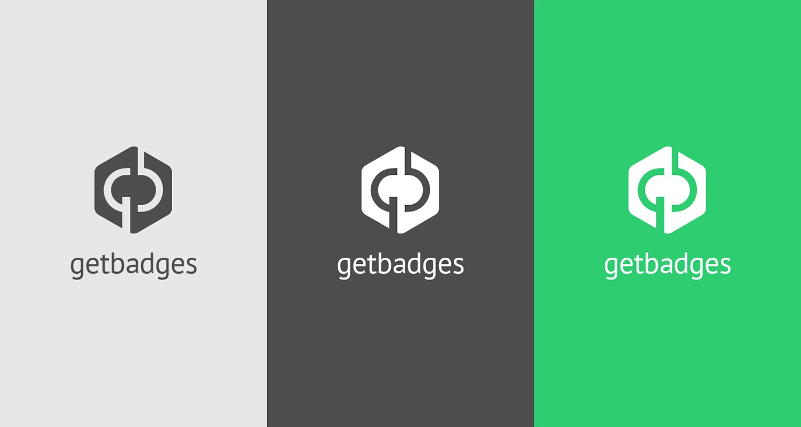
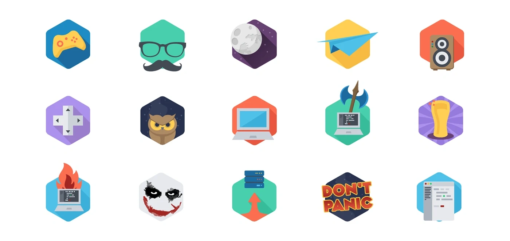
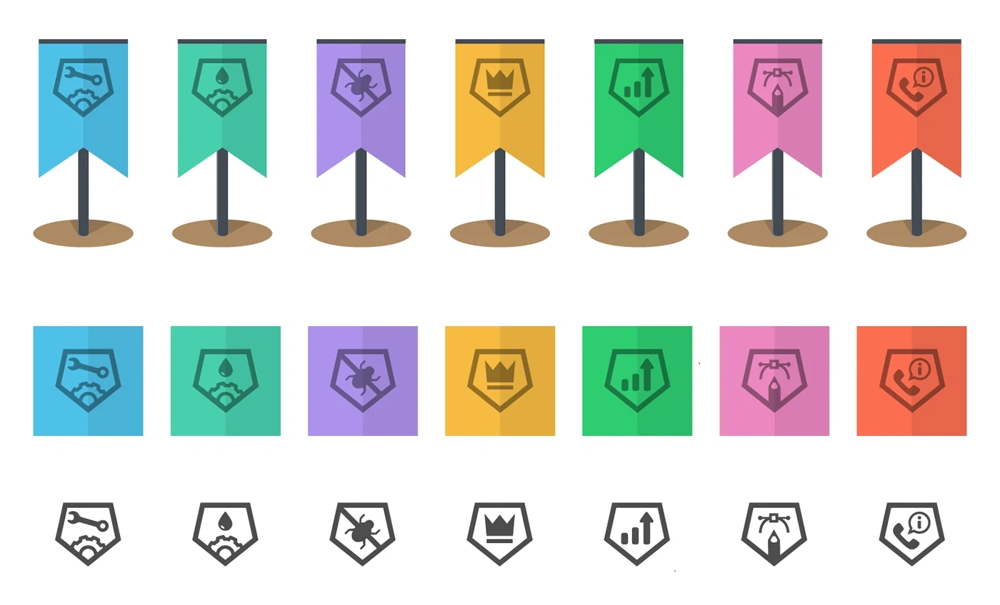
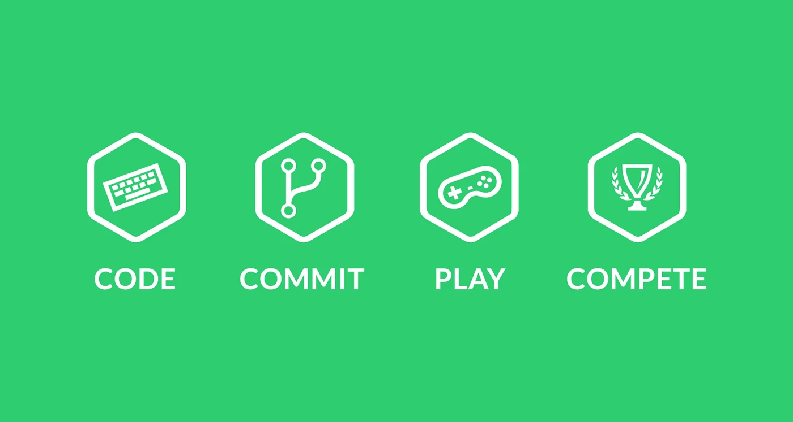

GetBadges
Brand identity for a gamification platform for developer teams

Overview
Fun and retro branding for GetBadges, a Poznań startup that gamified developers' everyday work. GetBadges plugged into the tools teams already used, like GitHub, Jira, Trello and Slack, and turned commits, code reviews and releases into an RPG. You earned experience points and badges, levelled up your character, and from a certain level the whole team joined forces to fight monsters over the course of a sprint. The point was to nudge good habits, like shipping often and reviewing each other's code, without anyone feeling lectured. The branding is built on the hexagon, the classic badge shape, and it runs through everything: the logo with its bold green gb monogram, the rest of the branding materials, and the badges themselves.
Part of the job was designing a basic badge system that could later be expanded and modified as the game grew. The badges had a playful feel and came in different levels of complexity, from simple flat icons to more elaborate illustrations, all full of gaming and developer in-jokes: controllers and D-pads, a laptop on fire, a "Don't panic" sign. Users collected them inside the platform, and some were also printed as laptop stickers to help promote the startup. A set of simple line icons sums up the whole idea: code, commit, play, compete.



